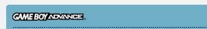
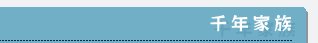
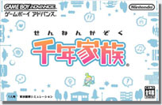
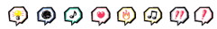
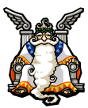
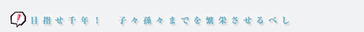
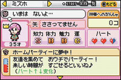

 公式ホームページはこちら 公式ホームページはこちら |
|
ゲームボーイアドバンスソフト
発売予定日：2005年3月10日
希望小売価格：4,800円（税込）
ジャンル：家族観察シミュレーション
プレイ人数：1人 |

| 自分は直接参加せず、ただただ見守り導く役割…そう、それは『神様』。可愛い我が子のような一族を、より良い方向へと導くということで、守護霊とかご先祖とかいう言葉でも良さそうです。ちょっとやってパッとやめられ、プレイしていなくても気になってしまうというのがミソ。深〜く考え、そして深〜くハマります。 |
 |

プレイヤーはなんと『神様』。人間界にあるひとつの家族を担当して、世代が代わるのを見守りつつ、時には励まし時には諫め…と陰ながら支えるのがお役目です。ナビゲーターでもあるキュピットの手ほどきや解説を受けつつ、各種アイテムを使って家族を導いていきます。
家族はそれぞれ個性があるので、彼らの成長や状況に応じて『がんばれの矢』や『おちつけの矢』を使い分けるのが大切。あとつぎの選定や能力アップの後押しもできるようになりますが、具体的な目標設定はできず、彼らの生活に直接介入できないというのがもどかしい。神様って（会ったことないけど）こんな気分なんでしょうかね…。 |
| 世代が代わっていく彼らの生活を眺めていると、目的が「一族をより良い方向へ導くこと」にシフトしていきました。最初の頃は一人ずつに対してアレコレ感情移入していたのですが、彼らを見守るうちに『一時の感情や感傷に惑わされず、長い目で見て家族にとって本当にいいことを与えなくては』と思うように。気付かぬうちに、神の自覚が出てきたんでしょうか。 |
| ずっとかかりきりじゃなくてもプレイできるのが大助かり。電源を切っている時も彼らの生活時間は進んで行くので、「自分が目を離したスキになにかあるのでは!?」という神の焦りも体験できてしまいます。パスワードやジョイスポットでの通信機能を使えば、さらに拡がる世代の環。人生について色々なことを考え、単純にも楽しめ、そしてついつい手を出してしまっていまに至ります。千年続くようガンバリますよー！ |
|